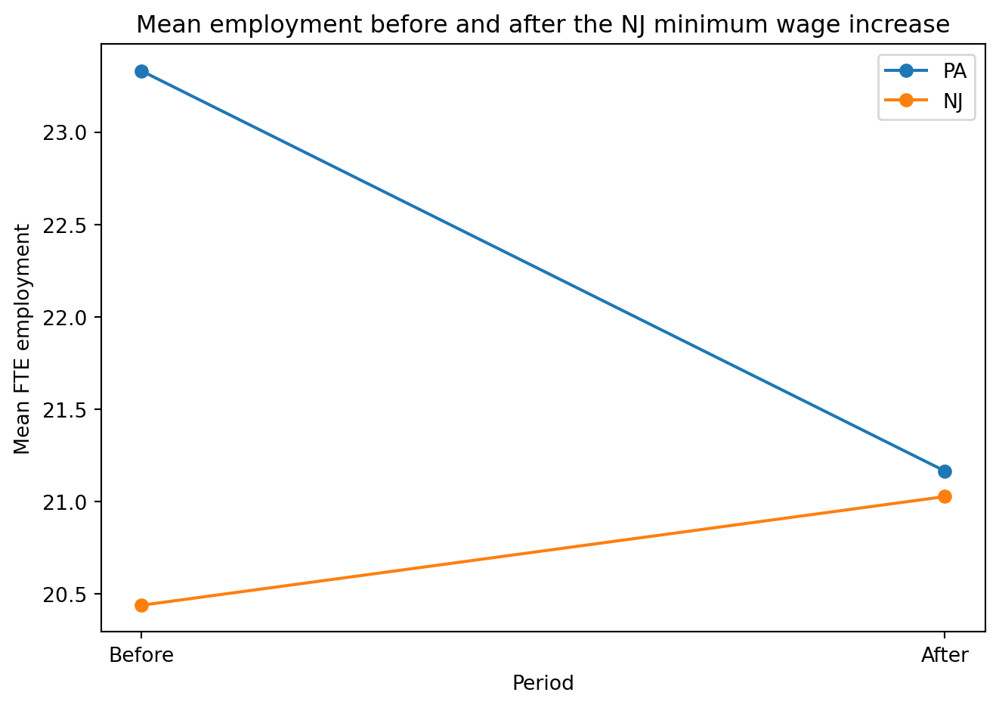

Minimum Wages and Employment: A Case Study of the Fast-Food Industry in New Jersey and Pennsylvania
Author
Shalini Harwalkar
Published
April 20, 2026
Introduction
Card and Krueger (1994) study whether New Jersey’s 1992 minimum wage increase reduced employment in fast-food restaurants relative to nearby Pennsylvania. Their research design is a classic difference-in-differences setup: New Jersey is the treated state, Pennsylvania is the comparison state, and restaurant employment is observed before and after the policy change.
In this post I replicate three parts of the paper. First, I replicate part of Table 2 to compare restaurant characteristics in New Jersey and Pennsylvania. Second, I replicate Table 3, rows 1–3 and columns 1–3, which summarize full-time-equivalent employment before and after the policy change. Third, I replicate Table 4, column (i), which regresses the change in employment on the size of the wage gap created by the new minimum wage. As my additional analysis, I also include a graph of mean employment before and after the policy change.
This subset of Table 2 shows that employment was initially lower in New Jersey than in Pennsylvania, while starting wages were very similar before the policy change. By the second survey, average starting wages were clearly higher in New Jersey.
The key difference-in-differences estimate is the change in New Jersey minus the change in Pennsylvania. Pennsylvania employment falls by about 2.283 full-time-equivalent workers, while New Jersey employment rises by about 0.467, so the estimated difference-in-differences effect is about 2.750.
Replicate Table 4, column (i)
The original SAS file uses a specific sample restriction for this regression. It keeps stores with non-missing employment change and then keeps either permanently closed stores or stores that remained open and have a valid second-wave wage observation.
The coefficient on gap is positive, which means restaurants that were further below the new minimum wage tended to experience larger employment increases. That goes against the simple prediction that a higher minimum wage should reduce employment.
Additional analysis: graph of mean employment before and after
Code
plot_df = pd.DataFrame({"state_label": ["PA", "PA", "NJ", "NJ"],"period": ["Before", "After", "Before", "After"],"mean_fte": [ means.loc[0, "emptot"], means.loc[0, "emptot2"], means.loc[1, "emptot"], means.loc[1, "emptot2"] ]})for state_name in ["PA", "NJ"]: sub = plot_df[plot_df["state_label"] == state_name] plt.plot(sub["period"], sub["mean_fte"], marker="o", label=state_name)plt.xlabel("Period")plt.ylabel("Mean FTE employment")plt.title("Mean employment before and after the NJ minimum wage increase")plt.legend()plt.tight_layout()plt.show()

This graph is my additional analysis. It presents the same Table 3 result visually: employment falls in Pennsylvania but rises slightly in New Jersey, so the relative change is positive rather than negative.
Conclusion
This replication reproduces part of Table 2, Table 3 rows 1–3 and columns 1–3, and Table 4 column (i) from Card and Krueger (1994). The main result is that employment in New Jersey does not fall relative to Pennsylvania after the minimum wage increase. In the simple before-and-after comparison, New Jersey’s employment change is about 2.75 full-time-equivalent workers higher than Pennsylvania’s. In the Table 4 regression, the estimated relationship between exposure to the new minimum wage and employment change is also positive.
Overall, these replications match the paper’s main qualitative conclusion: the 1992 New Jersey minimum wage increase did not reduce fast-food employment relative to the nearby Pennsylvania comparison group.